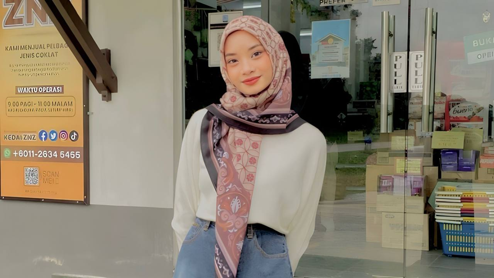

Welcome to My Homepage
ABOUT ME

Assalamualaikum everyone, My name is Aliyah Afifah binti Zailani and I am 25 years old. I live in
Terengganu and still stay with my parents. In our family , we are five siblings. I have
one older sister , two older brother and one younger brother. I am the fourth child of five siblings.
My father is a unemployeed , whereas my loving mother is a schoolteacher.My mother always inspires me
and pushes me to do greater work every day. She has given me hope for the future, which has completely
changed me. I couldn't be here at the college of my aspirations not for her efforts. Furthermore, friends are
the first people that come to mind when we discuss family in our lives. Through thick and thin, my few
remaining buddies will always have my back. My buddies constantly inspired me to explore who I was,
even throughout my school days. Consequently, I would answer that I am generally content with my
surroundings and that I am truly appreciative to God for providing me with a supporting environment
throughout my life. I am a student at Malaysia University of Science and Technology in master
level of Business Administration in Leadership & Management in Organization.
If I have free time , I will spending my time with watching drama on Netflix or Viu apps.